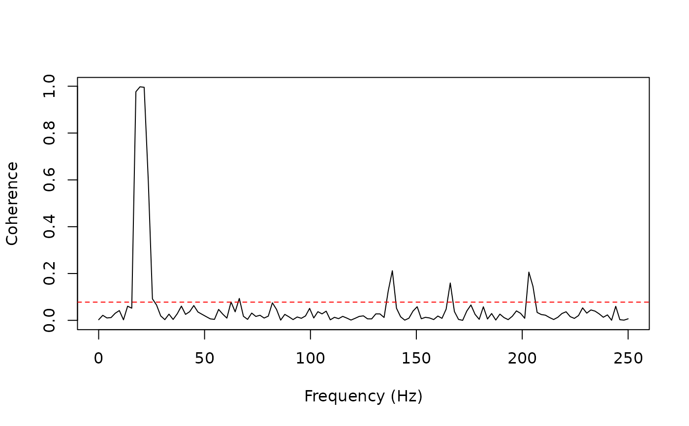

Computes the magnitude-squared coherence between two signals, which quantifies the linear frequency-domain relationship between them. The coherence is defined as: $$C_{xy}(f) = \frac{|S_{xy}(f)|^2}{S_{xx}(f) \cdot S_{yy}(f)}$$ where \(S_{xy}\) is the cross-spectral density and \(S_{xx}\), \(S_{yy}\) are the auto-spectral densities.
Arguments
- x
Numeric vector, PhysioExperiment, or MultiPhysioExperiment.
- y
Numeric vector or PhysioExperiment, or NULL when
xis an MPE.- sr
Numeric sampling rate in Hz (required when x/y are numeric).
- freq_range
Numeric vector of length 2 giving the frequency range
c(low, high)in Hz to restrict the output. NULL returns all frequencies.- nperseg
Integer segment length for Welch's method (default 256).
- noverlap
Integer overlap between segments, or NULL for
floor(nperseg / 2).- method
Character spectral estimation method. Currently only
"welch"is implemented;"multitaper"is reserved for future use.- type
Character coherence type:
"magnitude"(magnitude-squared coherence, the default),"imaginary"(the imaginary part of coherency, insensitive to zero-lag/volume-conduction coupling; Nolte et al., 2004), or"lagged"(Pascual-Marqui, 2007:Im(C) / sqrt(1 - Re(C)^2)withCthe complex coherency).- modality_x
Character modality name in MPE for the x signal.
- modality_y
Character modality name in MPE for the y signal.
- channels_x
Integer which channel to extract from x (default 1).
- channels_y
Integer which channel to extract from y (default 1).
Value
A named list with components:
- coherence
Numeric vector of coherence values at each frequency: magnitude-squared coherence in \([0, 1]\) for
type = "magnitude", or the (signed) imaginary / lagged coherence for the other types.- type
The coherence type computed.
- frequencies
Numeric vector of corresponding frequencies in Hz.
- confidence_limit
Numeric scalar giving the 95\ threshold:
1 - alpha^(1 / (L - 1))where alpha = 0.05 and L is the number of segments (Halliday et al. 1995). Coherence values above this limit are statistically significant.- n_segments
Integer number of segments used in Welch estimation.
Details
Unlike the coherence() function in PhysioAnalysis (which computes
coherence across all channel pairs within a single PhysioExperiment),
this function is designed for cross-modal analysis: it takes two separate
signals (or PhysioExperiment / MultiPhysioExperiment objects) and computes
the pairwise coherence between them.
References
Carter, G. C. (1987). Coherence and time delay estimation. Proceedings of the IEEE, 75(2), 236–255.
Halliday, D. M., Rosenberg, J. R., Amjad, A. M., Breeze, P., Conway, B. A., & Farmer, S. F. (1995). A framework for the analysis of mixed time series/point process data – theory and application to the study of physiological tremor, single motor unit discharges and electromyograms. Progress in Biophysics and Molecular Biology, 64(2–3), 237–278.
Nolte, G., et al. (2004). Identifying true brain interaction from EEG data using the imaginary part of coherency. Clinical Neurophysiology, 115(10), 2292–2307. doi:10.1016/j.clinph.2004.04.029
Pascual-Marqui, R. D. (2007). Instantaneous and lagged measurements of linear and nonlinear dependence between groups of multivariate time series. arXiv:0711.1455.
Examples
# Two coupled 20 Hz sinusoids
sr <- 500
t <- seq(0, 10, length.out = sr * 10)
x <- sin(2 * pi * 20 * t) + 0.2 * rnorm(length(t))
y <- 0.8 * sin(2 * pi * 20 * t) + 0.2 * rnorm(length(t))
result <- coherence(x, y, sr = sr)
plot(result$frequencies, result$coherence, type = "l",
xlab = "Frequency (Hz)", ylab = "Coherence")
abline(h = result$confidence_limit, lty = 2, col = "red")
